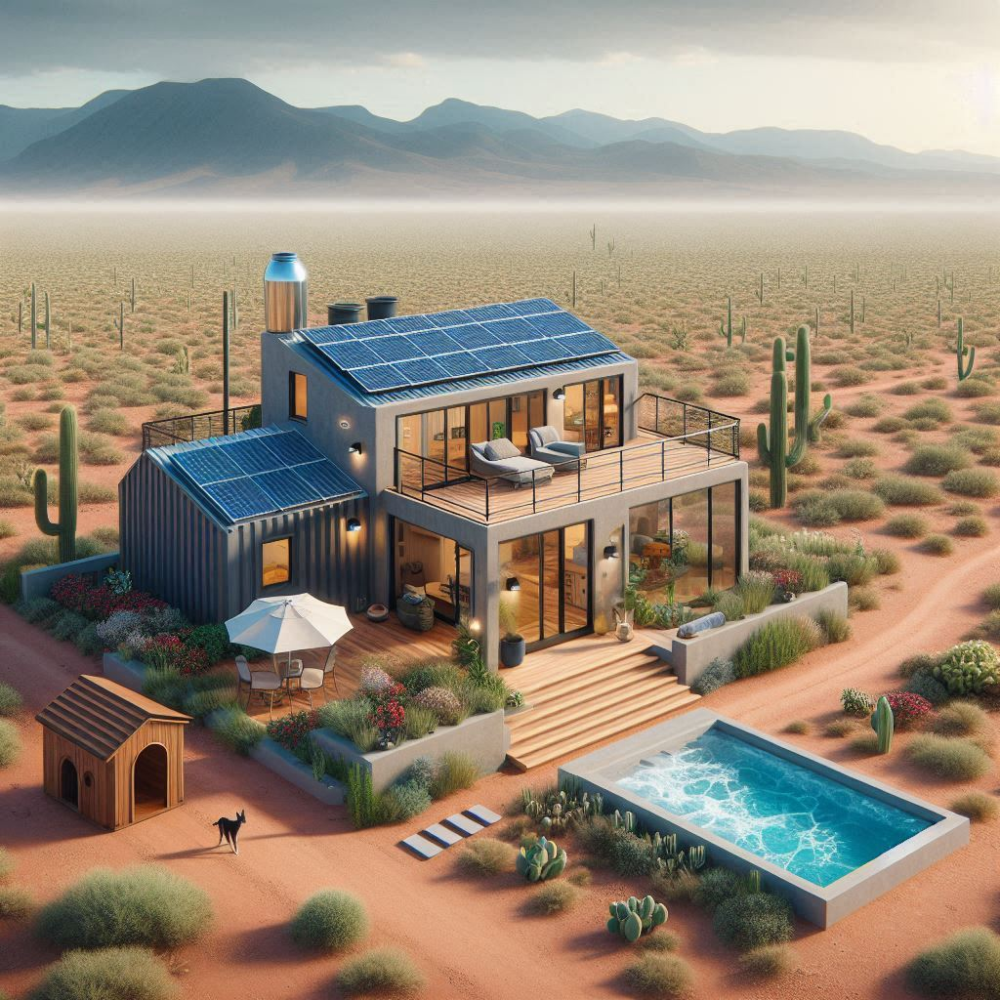
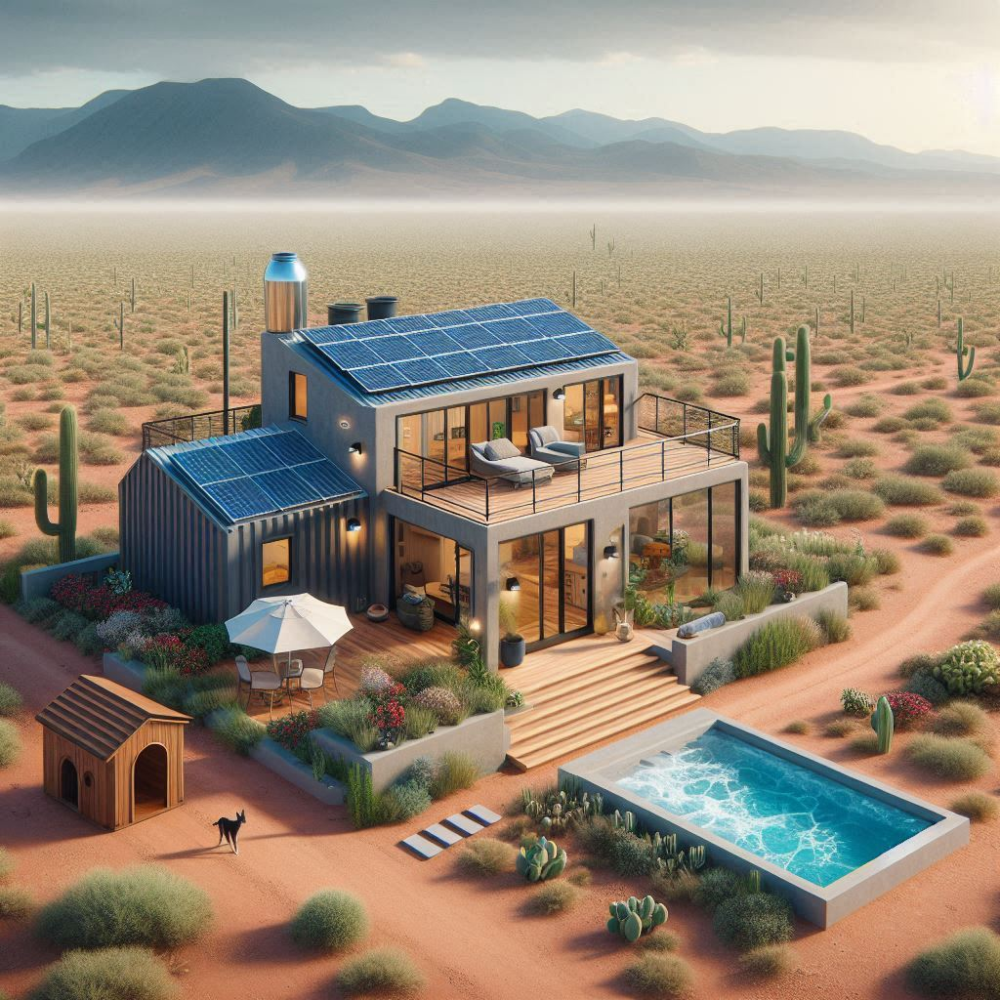

Concept Designs 📸
 



Land and Plat Photos 📸


Property Description 🌄
Nestled in the stunning Canyon del Rio, Valencia County, New Mexico, this 0.28-acre lot (measuring 80' × 150' or 12,000 sq ft) offers the perfect opportunity for sustainable living. The lot is a diagonal rectangle oriented from southwest to northeast, with an arroyo entering at the middle of the western boundary (x=0, y=75) at a 35-degree angle and exiting at the southeast region (x=80, y=35) at a 30-degree angle, cutting diagonally across the lot. The land slopes down from north (higher elevation, 5400 ft) to south (lower elevation, 5390 ft) into the arroyo, with a slope of 3.33% north-south and 5.88% diagonally, directing water flow naturally. The property is designed for off-grid living with all necessary utilities and is located in an ideal rural setting for peace, privacy, and a connection to nature. This land is zoned RR-1 and is perfectly suited for Kenny—looking for a blend of comfort, energy independence, and natural beauty. 🏜️
Lot Orientation and Dimensions ğŸ“
The lot’s longer axis (150 ft) runs from southwest (lower left) to northeast (upper right), and the shorter axis (80 ft) runs perpendicular, from northwest to southeast. We’ll define the lot’s bounding box in a rotated coordinate system where:
- ğŸ“The longer axis (150 ft) is the "y-axis" (y=0 at the southwest corner, y=150 at the northeast corner).
- ğŸ“The shorter axis (80 ft) is the "x-axis" (x=0 at the northwest edge, x=80 at the southeast edge).
- 🌊The arroyo enters at the middle of the western boundary (x=0, y=75) at a 35-degree angle and exits at the southeast region (x=80, y=35) at a 30-degree angle, with the land sloping down from north to south into the arroyo at 3.33% (north-south) and 5.88% (diagonal).
The coordinates from the parcel map (106.546659, 34.713242 degrees) place this in Canyon del Rio, Valencia County. 🏜️
Zoning Setbacks 🧱
| 🚧 Setback Type | Distance |
|---|---|
| 🛣️ Front (Southwest, y=0) | 25 ft |
| 🧱 Rear (Northeast, y=150) | 10 ft |
| 📠Side (Southeast, x=80) | 10 ft |
| 🌊 Arroyo (Northwest, x=0) | 35 ft from property line |
📠Setback Impact Summary
- ğŸ“Lot Area: 12,000 sq ft
- 🚧Setbacks Applied: 35' Arroyo (NW), 10' Southeast, 25' Front (SW), 10' Rear (NE)
- ğŸ“Usable Width: 80 ft − 35 ft (NW) − 10 ft (SE) = 35 ft
- ğŸ“Usable Length: 150 ft − 25 ft (SW) − 10 ft (NE) = 115 ft
- 🧱Buildable Area: 35 ft × 115 ft = 4,025 sq ft
- 📊% of Lot Usable: ≈ 33.5%
- ✅Complies with 35% max lot coverage allowed in RR-1 zoning.
The Container Home and Utilities 🏠
The centerpiece of this property is a solar-powered, 900 sq ft container home, built from three 40 ft x 8 ft shipping containers (two on the bottom, one on top). Designed with eco-conscious principles, the home minimizes energy use while maximizing comfort. The drain field is positioned in the northeastern quadrant to manage the 5.33% slope and prevent runoff into the arroyo, with variances needed for septic setbacks.
- 🏠 Container Home: A 900 sq ft home (40' x 16' bottom footprint, 40' x 8' top) with two containers side by side on the bottom (640 sq ft) and one on top (320 sq ft). Features include spray foam insulation (R-13), 32 sq ft of windows, and an external staircase. Positioned at x=40 to x=56, y=50 to y=90 to avoid deeper flood zones, elevated 4 ft.
- ❄️Heat Pump: A 2-ton system (2.4 kW) ensures efficient climate control.
- 🚽ATU Tank: A BioMicrobics MicroFAST 0.5 tank (8’ × 4’) at x=50 to x=58, y=126 to y=130, downslope for gravity-assisted waste flow.
- 💧Drain Field: A 10’ × 10’ drain field at x=50 to x=60, y=100 to y=110, elevated 1–2 ft to manage 5.33% slope and minimize runoff into the arroyo (35.78 ft away, variance needed).
- 💦Cistern: A 5,000-gallon cistern at x=60 to x=70, y=40 to y=47, near the home to avoid floodwater pooling.
- 🛁Jacuzzi: A 6’ × 6’ outdoor jacuzzi at x=50 to x=56, y=30 to y=36, elevated 2 ft on a gravel pad with a protective berm.
- 🐶Doghouse: A 3’ × 3’ doghouse at x=50 to x=53, y=45 to y=48, near the home on stable ground.
- 🌊Swales: A 77' × 5' swale along the southern boundary at x=0 to x=77, y=5 to y=10, to capture runoff and protect the arroyo.
- 🌊Retention Basin: A 10’ × 10’ basin at x=60 to x=70, y=10 to y=20, to hold excess runoff.
- 🚶Gravel Path: A 3’ × 20’ permeable gravel path at x=50 to x=53, y=30 to y=50, connecting the home, jacuzzi, and garden.
- 🌱Garden: A 10’ × 10’ garden at x=40 to x=50, y=30 to y=40, south of the home for sunlight access.
- ☀️Solar Power: A 5 kW solar array at x=40 to x=60, y=0 to y=20, south-facing to maximize sun exposure, producing around 20 kWh of energy per day.
Planned Structures 🏠
| Structure | Dimensions | Area (sq ft) | Position (x, y) | Notes |
|---|---|---|---|---|
| 🡠Container Home | 40' × 16' (bottom), 40' × 8' (top) | 960 (900 usable) | x=40 to x=56, y=50 to y=90 | Elevated 4 ft, R-13 insulation |
| 🚽 ATU Tank | 8' × 4' | 32 | x=50 to x=58, y=126 to y=130 | 10' from house, 5' from lines |
| 💧 Drain Field | 10' × 10' | 100 | x=50 to x=60, y=100 to y=110 | Elevated 1–2 ft, 35.78 ft from arroyo, variance needed |
| 💦 Cistern | 10' × 7' | 70 | x=60 to x=70, y=40 to y=47 | 5,000 gal rainwater |
| 🛠Jacuzzi | 6' × 6' | 36 | x=50 to x=56, y=30 to y=36 | Elevated 2 ft, with berm |
| 🶠Doghouse | 3' × 3' | 9 | x=50 to x=53, y=45 to y=48 | For pet comfort |
| 🌊 Swale | 80' × 5' | 400 | x=0 to x=80, y=5 to y=10 | Drainage mitigation |
| 🌊 Retention Basin | 10' × 10' | 100 | x=60 to x=70, y=10 to y=20 | Holds excess runoff |
| 🚶 Gravel Path | 3' × 20' | 60 | x=50 to x=53, y=30 to y=50 | Connects home, jacuzzi, garden |
| 🌱 Garden | 10' × 10' | 100 | x=40 to x=50, y=30 to y=40 | South-facing for sunlight |
| ☀️ Solar Array | 20' × 10' | 200 | x=40 to x=60, y=0 to y=20 | 5 kW, 20 kWh/day est. output |
Text Diagram with Diagonal Orientation ğŸ“
Canyon del Rio Lot (80 ft × 150 ft, SW to NE Diagonal, Sloping North to South)
-------------------------------------------------
y=150 (NE, Rear Setback: 10 ft, y=140 usable, High Point, 5400 ft)
| [ATU Tank: 8×4 🚽] |
| x=50────x=58 |
y=140 ──────────────────────────────────────────
| [Drain Field: 10×10 💧] |
y=130 ────────────┬────────── x=50──x=60 ─────
| │ |
y=120 ────────────┴────────────────────────────
| |
y=110 ──────────────────────────────────────────
| |
y=100 ──────────────────────────────────────────
| [Container Home: 40×16 🏡] |
y=90 ────────────────┬─────── x=40──x=56 ────
| │ |
y=80 ────────────────┴────────────────────────
| |
y=70 ───────┬───────────────────────────┬─────
| [Arroyo Entry: x=0, y=75, 35° 🌊] │ |
y=60 ───────┴───────────────────────────┴─────
| [Container Home cont. 🏡] [Doghouse 🐶] |
y=50 ────────────────────────┬──── x=50─x=53 │
| [Cistern: 10×7 💦] │ |
y=40 x=60────x=70 ───────────┴───[Jacuzzi: 6×6 🛁] x=50──x=56
| [Garden: 10×10 🌱] |
y=30 x=40──x=50 ─────────────────────────────
| [Retention Basin: 10×10 🌊] |
y=20 x=60────x=70 ───────────────────────────
| [Swale: 80×5 🌊] [Solar Array: 20×10 ☀️] |
y=10 x=0────x=80 x=40────x=60 [Arroyo Exit: x=80, y=35, 30° 🌊]
| (SW, Front Setback: 25 ft) |
|----x=35 (Arroyo Setback: 35 ft)──────────────|
y=0 x=0 (NW) x=80 (SE, 5390 ft)
(SW, Low Point)
-------------------------------------------------
Total Lot Usage ⚖️
| Category | Total Area Used |
|---|---|
| Structures | ~1,627 sq ft |
| % of Lot Used | ~13.6% |
| Lot Coverage Cap | 35% |
| ✅ Compliant? | ✅ Yes |
Septic Compliance (NMAC § 20.7.3) ğŸ“
| Requirement | Minimum Distance | Status |
|---|---|---|
| ATU to property line | 5 ft | ✅ |
| ATU to building | 10 ft | ✅ |
| Drain Field to cistern | 50 ft | ✅ 53 ft |
| Drain Field to building | 10 ft | ✅ |
| Drain Field to path (unpaved) | 4 ft | ✅ |
| Drain Field to arroyo | 100 ft | âš ï¸ 35.78 ft, variance needed (pending NMED approval) |
Summary 📌
✅ You can build your dream container home with an outdoor jacuzzi, septic, solar, and garden on this lot, even in a high-risk flood zone. The arroyo (entering at x=0, y=75 at 35 degrees, exiting at x=80, y=35 at 30 degrees) and slope (3.33% north-south, 5.88% diagonal) are manageable with elevation (4 ft for the home, 2 ft for the jacuzzi, 1–2 ft for the drain field) and runoff mitigation (swales at x=0 to x=80, y=5 to y=10, and a retention basin). A variance is needed for the drain field’s proximity to the arroyo (35.78 ft, needs 100 ft), but your mitigation measures (buffer zone, trench) make approval likely. With a 33.5% buildable area and only 13.6% used, this efficient, solar-powered off-grid container home fits within RR-1 zoning. Budget $97,284–$174,845 (including flood-proofing), and consider flood insurance ($500–$1,500/year). Next steps: apply for the floodplain development permit ($100–$500, 1–2 months) and NMED variance ($500–$1,500, 1–3 months). You’re on track to build by 2028! 🌵🏜️